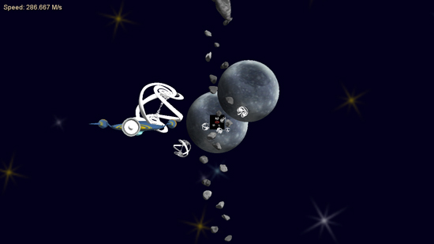

Space Chase Race!
Posted by Mathew on October 9th, 2008

Racing, Chasing, Space Game
Downloads:
Team Hiro:
Platform:
Made using the XNA framework and C#.
Notes:
Completed as a first project in CSE 491, Fundamentals of Game Programming, this project turned out a bit messy to be honest. It was the first game where we really wanted the XBox controller to be the main form of input, and even allows two players to play simultaneously in a split screen mode should the player have two controllers available. Overall I think we did some interesting things in this project, but we simply did not have the time to make it into a polished product.
Posted in Academic, Game
Archive:
Category:
Type: